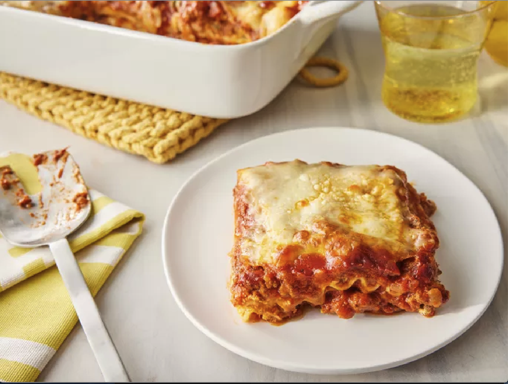

Home
World's Best Lasagna
This lasagna recipe takes a little work, but it is so satisfying and
filling that it's worth it!

Recipe Description
When John Chandler submitted this lasagna recipe to Allrecipes more than
20 years ago, he had no idea how successful it would become. One of our
top-performing recipes of all time, World's Best Lasagna racks up more
than 7 million views per year and has ranked among the most popular
lasagna recipes on the internet for two decades. Unfortunately, John
unexpectedly passed away at 53 years old — read all about his life and
legacy here. Make our most popular lasagna today to find out what all the
fuss is about!
Ingredients
- 1 pound sweet Italian sausage
- ¾ pound lean ground beef
- ½ cup minced onion
- 2 cloves garlic, crushed
- 1 (28 ounce) can crushed tomatoes
- 2 (6.5 ounce) cans canned tomato sauce
- 2 (6 ounce) cans tomato paste
- ½ cup water
- 2 tablespoons white sugar
- 4 tablespoons chopped fresh parsley, divided
- 1 ½ teaspoons dried basil leaves
- 1 ½ teaspoons salt, divided, or to taste
- 1 teaspoon Italian seasoning
- ½ teaspoon fennel seeds
- ¼ teaspoon ground black pepper
- 12 lasagna noodles
- 16 ounces ricotta cheese
- 1 egg
- ¾ pound mozzarella cheese, sliced
- ¾ cup grated Parmesan cheese
How to Make Lasagna Step-By-Step
Here's a very brief overview of what you can expect when you make homemade
lasagna:
- Make the meat sauce.
- Cook the noodles.
- Make the ricotta mixture.
- Layer the lasagna according to the recipe instructions.
- Cover with foil and bake.
- Let the lasagna rest before serving.